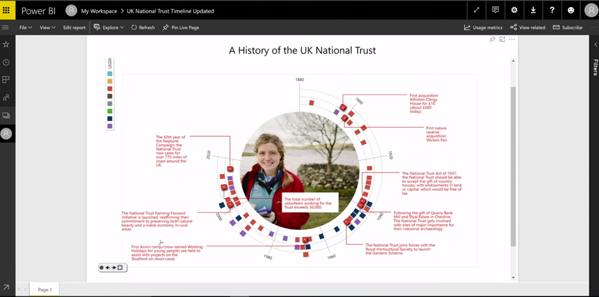
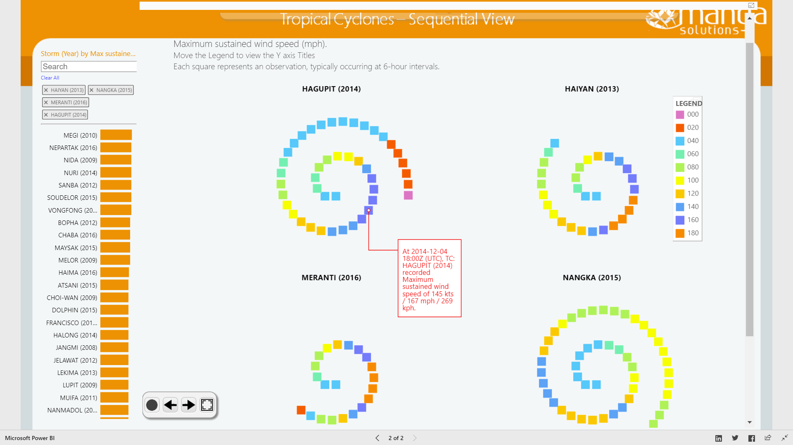
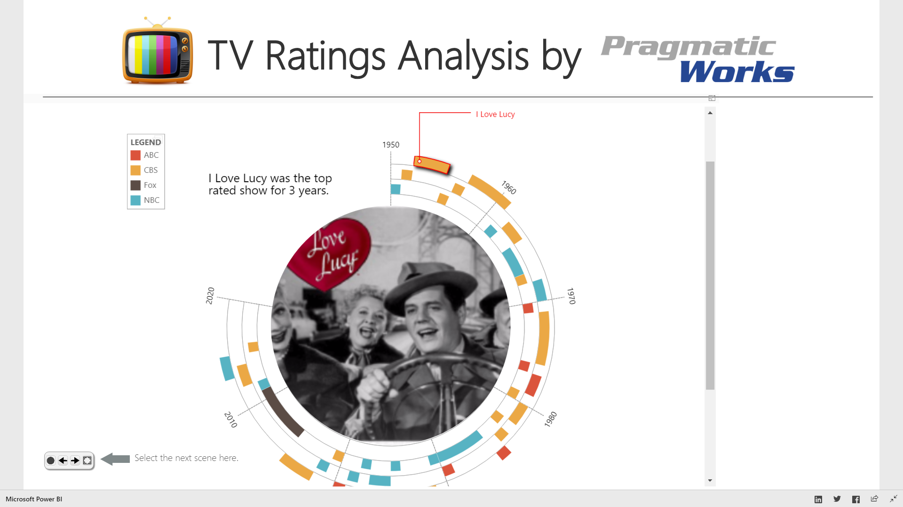

Timeline Storyteller
The Design & Deployment of an Interactive Authoring Tool
Matthew Brehmer · Microsoft Research · @mattbrehmer In collaboration with Bongshin Lee, Nathalie Henry Riche, David Tittsworth,The 2019 Computation + Journalism Symposium · slides: aka.ms/cj19
The Daily Routines of Famous Creative People
Story inspired by infographics by Podio info we trust Daily Rituals: How Artists Work Mason Currey
I want to tell you a story about the daily routines of famous creative people.
MAX : What you see here is a set of radial timelines depicting a typical 24 hours in the lives of 26 writers, artists, composers, and the like.
NEXT : Have you ever wondered: when do creative people create? Or are all creative people similar in this regard?
NEXT : Now I want to tell you about the potential relationship between sleep and creativity, and possibly to dispel any potential misconceptions that creative people have irregular schedules.
NEXT : This 24-hour clock isn't the best way to convey the number or heterogeneity of activities, so I'm going to transition to a just show you a sequence of activities without any duration, effectively resulting in a bar chart wrapped radially.
NEXT : To show who varied the most and least among these people, a linear representation is perhaps best, where you can see that Darwin has the most varied day of all the people here
NEXT : Finally, I'll restore the duration of events so that you can compare these timelines just by scanning up and down, where you might spot times where some routines appear to be in sync with one another, such as when people work or sleep at the same time.
A Timeline Design Space
Timelines Revisited: A Design Space and Considerations for Expressive Storytelling Brehmer , Lee, Bach, Henry Riche, and Munzner. In IEEE TVCG (2017).
Representation Scale Layout
Timeline Storyteller, the open-source tool I used to tell you this story, is a visual storytelling tool based on a design space, or a set of design choices for presenting timeline data that my colleagues and I proposed in an IEEE Transactions on Visualization and Computer Graphics paper published in 2017.
Expressive Storytelling with Timelines
Timelines Revisited: A Design Space and Considerations for Expressive Storytelling Brehmer , Lee, Bach, Henry Riche, and Munzner. In IEEE TVCG (2017).
timelinesrevisited.github.io alternative representations for time. alternative time scales .chronological or non-chronological narratives.reveal visual elements, selectively highlighting and annotating to direct attention.
In this TVCG paper we make the case that timeline design tools should provide alternative representations of time and alternative time scales.
The Authoring Interface of Timeline Storyteller
Web version imports CSV, JSON, GSheet. Power BI version imports various data formats.Web version exports PNG, SVG, GIF, JSON spec. Power BI version exports PBIX, iFrame.
Timeline Storyteller is the realization of the design space and the considerations for expressive storytelling that we put forward in our TVCG paper
Evaluating Timeline Storyteller
A controlled laboratory study to assess expressivity seemed to be inappropriate .with their own data ?reflect our timeline design space ?
Since its release in mid 2017, I've been thinking about ways to evaluate Timeline Storyteller and to better understand how people are using it.
Promoting Timeline Storyteller to Practitioners
Demos / talks at the Tapestry Conference OpenVisConf Dublin Data Summit Data Journalism Team Future of Storytelling Summit Power BI Blog Power BI YouTube channel Data Insights Summit

Now in order to study how people use a deployed tool, you need to promote it to practitioners,
Timeline Storyteller: Collecting Usage Data
Exported content from the web version in mid 2017.Storytelling Contest Microsoft Data Journalism Team Download metrics of the Power BI desktop version:
36,000 downloads of the Power BI version as of January 2019.
Following the promotional effort, I set about collecting data on how people were using Timeline Storyteller.
Timeline Storyteller: Content Analysis
223 unique items of exported content from the web version (subject to author consent).Linear representation and Chronological time scale were most common.
I saved copies of content exported from the web version of Timeline Storyteller over the course of about 9 months, subject to the approval of content authors.
Timeline Storyteller: Content Analysis (cont.)
Example entries from the Power BI user community storytelling contest


Tropical Cyclones TV Network Ratings
With regards to the contest,
Timeline Storyteller: Conclusions & Opportunities
No prior interactive tools for presenting expressive timeline narratives .
multiple visual representation choices .
reveal + transform ; selectively highlight + annotate ; applicable to other data types.
Recommend design choices and annotations based on properties of the dataset.
In summary, Timeline Storyteller fills a gap in that no existing tool allows a non-programmer to present a visually expressive timeline narrative that may or may not be chronological.